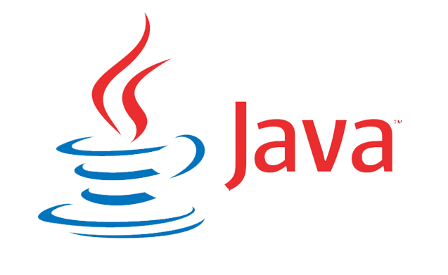
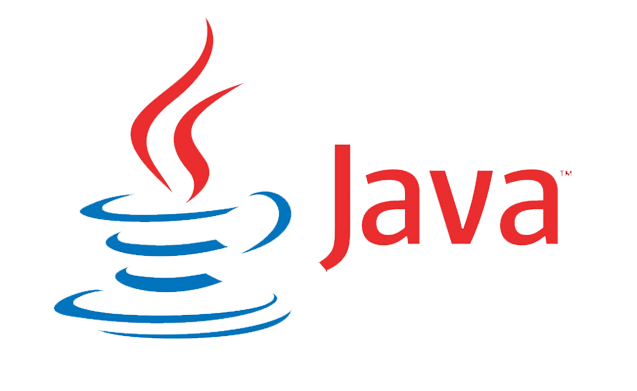

About Me
Web Developer!
"Hi, I'm Dnyaneshwari Khatiwada, an IT student passionate about technology and problem-solving. I have a strong interest in web development and software engineering." I am currently pursuing a diploma program in Information Technology at Government Polytechnic,Jaglaon.I have acquired a comprehensive knowledge in programming languages such as C++,Java, and JavaScript. Additionally, I have taken courses in data structures, algorithms, and database management. Currently, I am working on my capstrone projects[Yoga Website] that demonstrate my skills and problem-solving abilities in Web-Development & Designing. In my free time, I enjoy exploring emerging technologies and keeping up with industry trends.My ultimate goal is to work as a software engineer in a dynamic and innovative company where I can contribute to meaningful projects. I aspire to continuously learn and grow in my career, staying updated with the latest technologies and practices.
Langauges- Known
Programming-Languages

 


Database Management


My Education
Web Developer!
[Diploma in Information Technology At Government Polytechnic,Jalgaon Maharashtra]
My name is Dnyaneshwari Khatiwada,and I am currently pursuing a diploma program in Information Technology at Government Polytechnic,Jaglaon. I am Completing a wide range of courses covering key aspects of Information Technology,including Programming Fundamentals, Database Management, Web Development, Networking,and Systems Analysis. Focused on the specialization track of Web Development, gaining expertise in programming languages such as Java, C++,and learning about software engineering principles and best practices.
Latest Projects
Web Design
Responsive Website Redesign:-In the responsive website redesign project, I applied responsive design principles by using CSS media queries to adjust the layout and styles based on screen sizes. By implementing a mobile-first approach, I ensured that the website offers a seamless browsing experience on smartphones, tablets, and desktops.

E-Commerce Website
For this project, I designed and developed a fashion e-commerce website aimed at providing users with a seamless shopping experience. These features include a user-friendly product catalog with advanced search and filtering options.The e-commerce website includes several key features to enhance the shopping experience. In this project, I showcase the fashion e-commerce website as a prominent project. I provide an overview of the project's objectives, highlight the technical aspects involved, and discuss the challenges overcome during the development process. Additionally, I present screenshots of the website to give a visual representation of the final product.
Web Design
Responsive Website Redesign:-In the responsive website redesign project, I applied responsive design principles by using CSS media queries to adjust the layout and styles based on screen sizes. By implementing a mobile-first approach, I ensured that the website offers a seamless browsing experience on smartphones, tablets, and desktops.